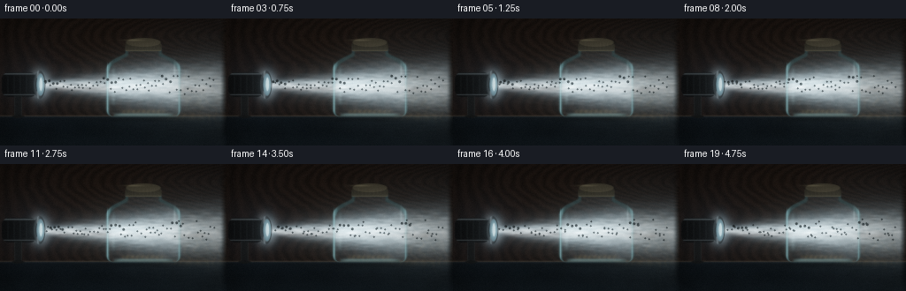
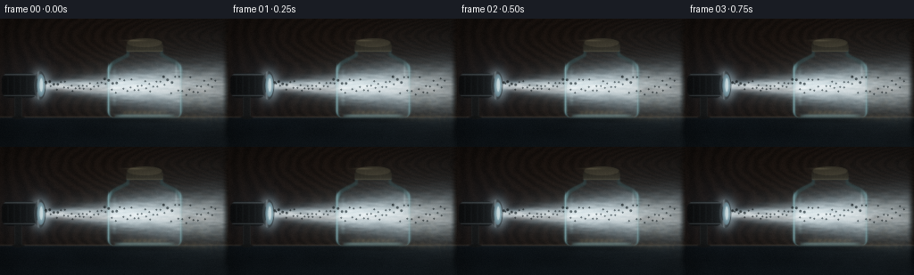
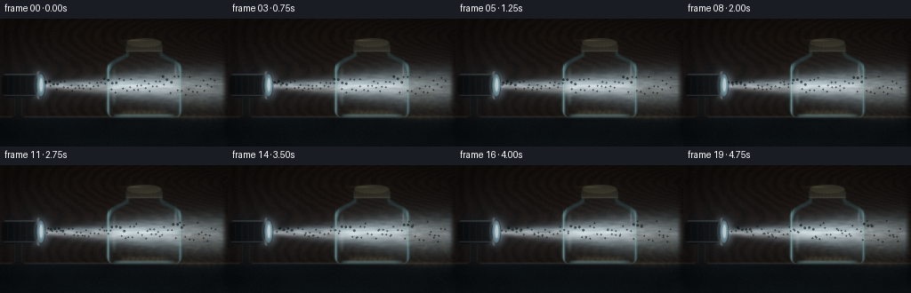
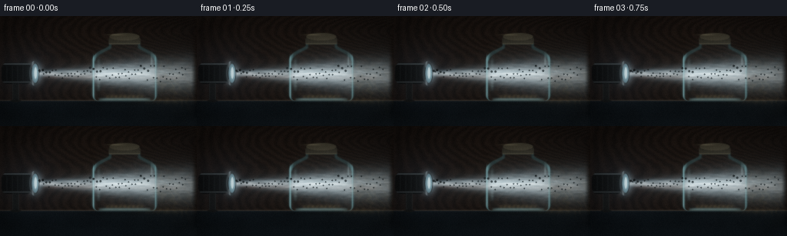

CODING AGENTS AS PIXEL WORLD MODELS
traex/DeepSeek-V4.1-Flash · phygen_048
点击播放 · 原生 RGB 像素
逐轮保存的候选
回放视频、检查图与代码变化。
每份候选均可单独播放。实际图片检查记录在下方工具轨迹中。
候选 01播放与检查图
点击播放 · 原生 RGB 像素


展开代码变化
--- 上一保存版本
+++ 本次保存版本
@@ -0,0 +1,514 @@
+from pathlib import Path
+
+import cv2
+import numpy as np
+
+import artifact_io
+
+
+W, H, FPS, N = 256, 144, 4.0, 20
+SS = 2
+HR, HC = H * SS, W * SS
+CASE_DIR = Path(__file__).resolve().parent
+
+
+def smoothstep(edge0, edge1, value):
+ t = np.clip((value - edge0) / (edge1 - edge0), 0.0, 1.0)
+ return t * t * (3.0 - 2.0 * t)
+
+
+def value_noise(rng, scale_x, scale_y=None, h=HR, w=HC):
+ scale_y = scale_x if scale_y is None else scale_y
+ gh = max(3, int(h / scale_y) + 3)
+ gw = max(3, int(w / scale_x) + 3)
+ coarse = rng.random((gh, gw), dtype=np.float32)
+ return cv2.resize(coarse, (w, h), interpolation=cv2.INTER_CUBIC)
+
+
+def fbm(rng, scale, octaves=4, gain=0.48):
+ result = np.zeros((HR, HC), np.float32)
+ weight_sum = 0.0
+ weight = 1.0
+ for octave in range(octaves):
+ result += weight * value_noise(rng, scale / (2**octave))
+ weight_sum += weight
+ weight *= gain
+ result /= weight_sum
+ return result
+
+
+def ellipse_mask(cx, cy, rx, ry, softness=0.8):
+ yy, xx = np.mgrid[0:HR, 0:HC].astype(np.float32)
+ xx = (xx + 0.5) / SS
+ yy = (yy + 0.5) / SS
+ distance = np.sqrt(((xx - cx) / rx) ** 2 + ((yy - cy) / ry) ** 2)
+ return 1.0 - smoothstep(1.0 - softness / min(rx, ry), 1.0, distance)
+
+
+def rounded_rect_mask(cx, cy, half_w, half_h, radius, softness=0.7):
+ yy, xx = np.mgrid[0:HR, 0:HC].astype(np.float32)
+ xx = (xx + 0.5) / SS
+ yy = (yy + 0.5) / SS
+ qx = np.abs(xx - cx) - half_w + radius
+ qy = np.abs(yy - cy) - half_h + radius
+ outside = np.sqrt(np.maximum(qx, 0.0) ** 2 + np.maximum(qy, 0.0) ** 2)
+ distance = outside + np.minimum(np.maximum(qx, qy), 0.0) - radius
+ return 1.0 - smoothstep(-softness, softness, distance)
+
+
+def polygon_mask(points, softness=0.65):
+ mask = np.zeros((HR, HC), np.uint8)
+ pixels = np.rint(np.asarray(points, np.float32) * SS).astype(np.int32)
+ cv2.fillPoly(mask, [pixels], 255, lineType=cv2.LINE_AA)
+ mask = mask.astype(np.float32) / 255.0
+ if softness > 0:
+ mask = cv2.GaussianBlur(mask, (0, 0), softness * SS)
+ return mask
+
+
+def cubic(p0, p1, p2, p3, count=18):
+ t = np.linspace(0.0, 1.0, count, endpoint=False, dtype=np.float32)[:, None]
+ points = (
+ (1 - t) ** 3 * p0
+ + 3 * (1 - t) ** 2 * t * p1
+ + 3 * (1 - t) * t**2 * p2
+ + t**3 * p3
+ )
+ return [tuple(point) for point in points]
+
+
+def add_glow(target, mask, color, strength):
+ color = np.asarray(color, np.float32)
+ target += mask[..., None] * color * strength
+
+
+def make_jar_outline():
+ left = (
+ cubic((142, 38), (142, 40), (137, 42), (131, 45), 10)
+ + cubic((131, 45), (125, 48), (120, 53), (120, 59), 10)
+ + [(120, 100)]
+ + cubic((120, 100), (120, 108), (123, 111), (131, 111), 8)
+ + [(193, 111)]
+ + cubic((193, 111), (201, 111), (204, 108), (204, 100), 8)
+ + [(204, 59)]
+ + cubic((204, 59), (204, 53), (199, 48), (193, 45), 10)
+ + cubic((193, 45), (187, 42), (182, 40), (182, 38), 10)
+ )
+ return left + [(182, 34), (142, 34)]
+
+
+def render_background(rng, t):
+ yy, xx = np.mgrid[0:HR, 0:HC].astype(np.float32)
+ x = (xx + 0.5) / SS
+ y = (yy + 0.5) / SS
+
+ vertical = np.clip(y / H, 0.0, 1.0)
+ image = np.empty((HR, HC, 3), np.float32)
+ image[..., 0] = 0.012 + 0.016 * vertical
+ image[..., 1] = 0.021 + 0.022 * vertical
+ image[..., 2] = 0.030 + 0.024 * vertical
+
+ wall_texture = fbm(rng, 38, octaves=4)
+ image *= (0.88 + 0.24 * wall_texture[..., None])
+
+ table_y = 110.5
+ table = 1.0 - smoothstep(table_y - 0.7, table_y + 0.8, y)
+ wood = fbm(rng, 13, octaves=3)
+ grain = 0.5 + 0.5 * np.sin(
+ x * (0.42 + 0.10 * np.sin(y * 0.08))
+ + 2.8 * wood
+ + 0.13 * np.sin(x * 0.12 + t * 0.25)
+ )
+ table_color = np.stack(
+ (
+ 0.034 + 0.020 * grain,
+ 0.024 + 0.013 * grain,
+ 0.018 + 0.010 * grain,
+ ),
+ axis=-1,
+ )
+ image = image * (1.0 - table[..., None]) + table_color * table[..., None]
+
+ edge = np.exp(-((y - table_y) / 0.85) ** 2)
+ image += edge[..., None] * np.array((0.08, 0.065, 0.048), np.float32)
+ front = smoothstep(table_y + 1.0, table_y + 3.0, y) * (1.0 - smoothstep(126, 144, y))
+ image *= (1.0 - 0.28 * front[..., None])
+
+ radial = np.exp(
+ -(((x - 34) / 49) ** 2 + ((y - 75) / 39) ** 2)
+ )
+ image += radial[..., None] * np.array((0.020, 0.030, 0.041), np.float32)
+ return image
+
+
+def beam_field(t):
+ yy, xx = np.mgrid[0:HR, 0:HC].astype(np.float32)
+ x = (xx + 0.5) / SS
+ y = (yy + 0.5) / SS
+
+ x0, x1 = 45.0, 255.0
+ tline = np.clip((x - x0) / (x1 - x0), 0.0, 1.0)
+ center = 75.5 + 2.0 * tline + 0.30 * np.sin(t * 0.7)
+ width = 3.0 + 23.0 * tline
+ vertical = np.exp(-((y - center) / width) ** 2)
+ vertical += 0.16 * np.exp(-((y - center) / (width * 2.7)) ** 2)
+ gate = smoothstep(42.0, 51.0, x) * (1.0 - smoothstep(248.0, 257.0, x))
+ falloff = 0.78 + 0.22 * np.exp(-tline * 1.8)
+ beam = vertical * gate * falloff
+
+ streak_noise = value_noise(np.random.default_rng(111), 23.0, 3.4)
+ streak_noise = np.roll(streak_noise, int(t * 4.5 * SS), axis=1)
+ fine = value_noise(np.random.default_rng(112), 7.0, 4.2)
+ fine = np.roll(fine, int(t * 2.3 * SS), axis=1)
+ texture = 0.70 + 0.22 * streak_noise + 0.08 * fine
+ return np.clip(beam * texture, 0.0, 1.6)
+
+
+def add_headlight_and_beam(image, t):
+ yy, xx = np.mgrid[0:HR, 0:HC].astype(np.float32)
+ x = (xx + 0.5) / SS
+ y = (yy + 0.5) / SS
+ beam = beam_field(t)
+
+ cool = np.array((0.73, 0.91, 1.0), np.float32)
+ warm = np.array((1.0, 0.68, 0.35), np.float32)
+ add_glow(image, beam, cool, 0.52)
+ add_glow(image, beam**3.1, np.array((0.95, 1.0, 1.0), np.float32), 0.68)
+
+ # Refractive color fringes at the edges of the focused shaft.
+ beam_top = np.exp(-((y - (72.0 + 1.5 * np.clip((x - 45) / 210, 0, 1))) / 2.2) ** 2)
+ beam_bottom = np.exp(-((y - (79.2 + 2.2 * np.clip((x - 45) / 210, 0, 1))) / 2.4) ** 2)
+ side_gate = smoothstep(48, 68, x) * (1.0 - smoothstep(224, 250, x))
+ add_glow(image, beam_top * side_gate, (0.12, 0.38, 0.52), 0.10)
+ add_glow(image, beam_bottom * side_gate, (0.62, 0.23, 0.08), 0.08)
+
+ # Concentrated source glow at the projector lens.
+ lens_glow = np.exp(-(((x - 45) / 9.5) ** 2 + ((y - 75) / 13.5) ** 2))
+ add_glow(image, lens_glow, cool, 0.72)
+
+ # A soft reflected pool where the beam reaches the rear surface.
+ pool = np.exp(-(((x - 223) / 28) ** 2 + ((y - 81) / 19) ** 2))
+ add_glow(image, pool, (0.20, 0.23, 0.20), 0.22)
+
+ # Housing and mounting bracket are intentionally dark so the lens remains the focus.
+ body = rounded_rect_mask(22, 75, 20, 14, 8, 0.65)
+ body_shade = 0.30 + 0.38 * smoothstep(0, 44, x) + 0.12 * (1 - smoothstep(0, 28, y))
+ housing_color = np.array((0.060, 0.071, 0.078), np.float32)[None, None, :]
+ housing_color = housing_color * body_shade[..., None]
+ image[:] = image * (1 - 0.94 * body[..., None]) + housing_color * (0.94 * body[..., None])
+
+ chrome = np.exp(-((y - 62.8) / 0.85) ** 2) * body
+ chrome += 0.75 * np.exp(-((y - 86.4) / 0.65) ** 2) * body
+ add_glow(image, chrome, (0.45, 0.52, 0.55), 0.34)
+
+ for ridge_x in (9, 16, 23, 30):
+ ridge = np.exp(-((x - ridge_x) / 0.45) ** 2) * np.exp(-((y - 75) / 10.5) ** 8)
+ add_glow(image, ridge * body, (0.14, 0.17, 0.18), 0.20)
+
+ bracket = rounded_rect_mask(20.5, 100, 4.2, 13, 2.0, 0.55)
+ bracket_color = np.array((0.045, 0.052, 0.055), np.float32)
+ image[:] = image * (1 - 0.82 * bracket[..., None]) + bracket_color * (0.82 * bracket[..., None])
+ bracket_edge = np.abs(x - 20.5)
+ bracket_line = np.exp(-((bracket_edge - 3.8) / 0.45) ** 2) * bracket
+ add_glow(image, bracket_line, (0.16, 0.19, 0.19), 0.22)
+ base = ellipse_mask(20.5, 111, 8.5, 2.0, 0.6)
+ image[:] = image * (1 - 0.85 * base[..., None]) + np.array((0.035, 0.039, 0.040)) * (0.85 * base[..., None])
+
+ outer_ring = ellipse_mask(44.7, 75, 7.0, 16.8, 0.55)
+ inner_ring = ellipse_mask(45.4, 75, 5.2, 13.7, 0.55)
+ ring = np.clip(outer_ring - inner_ring, 0, 1)
+ ring_shade = 0.35 + 0.65 * np.exp(-((x - 42.8) / 1.3) ** 2)
+ image[:] = image * (1 - 0.96 * ring[..., None])
+ image += ring[..., None] * np.stack(
+ (0.34 * ring_shade, 0.40 * ring_shade, 0.43 * ring_shade), axis=-1
+ )
+
+ lens = ellipse_mask(45.8, 75, 4.8, 13.1, 0.5)
+ lens_radial = np.exp(-(((x - 46.2) / 4.2) ** 2 + ((y - 75) / 11.4) ** 2))
+ lens_color = np.array((0.48, 0.73, 0.84), np.float32)
+ image[:] = image * (1 - 0.92 * lens[..., None])
+ image += lens[..., None] * lens_color * (0.30 + 0.90 * lens_radial[..., None])
+ lens_hot = ellipse_mask(46.3, 74.5, 2.0, 8.5, 0.45)
+ add_glow(image, lens_hot, (0.75, 0.95, 1.0), 0.85)
+
+ return image, beam
+
+
+def add_caustics(image, jar_mask, t):
+ yy, xx = np.mgrid[0:HR, 0:HC].astype(np.float32)
+ x = (xx + 0.5) / SS
+ y = (yy + 0.5) / SS
+ tline = np.clip((x - 198) / 55, 0, 1)
+ envelope = smoothstep(196, 208, x) * (1 - smoothstep(246, 256, x))
+ envelope *= np.exp(-((y - (78 + 12 * tline)) / (18 + 7 * tline)) ** 2)
+
+ warp = value_noise(np.random.default_rng(88), 17.0, 11.0)
+ phase = (
+ (x - 206) * 0.52
+ - y * 0.24
+ + 5.2 * warp
+ + t * 0.45
+ )
+ bands = (0.5 + 0.5 * np.sin(phase)) ** 5
+ bands += 0.55 * (0.5 + 0.5 * np.sin(phase * 1.73 + 1.2)) ** 8
+ bands *= envelope
+ add_glow(image, bands, (0.34, 0.26, 0.12), 0.11)
+
+ floor_pool = np.exp(-(((x - 219) / 34) ** 2 + ((y - 111) / 3.4) ** 2))
+ floor_pool *= (0.55 + 0.45 * np.sin(x * 0.35 + 2.2 * warp + t * 0.4) ** 2)
+ add_glow(image, floor_pool, (0.31, 0.24, 0.12), 0.20)
+
+ shadow = np.exp(-(((x - 158) / 48) ** 2 + ((y - 114) / 3.0) ** 2))
+ image *= (1 - 0.30 * shadow[..., None] * (1 - jar_mask[..., None]))
+
+
+def jar_layers(t):
+ yy, xx = np.mgrid[0:HR, 0:HC].astype(np.float32)
+ x = (xx + 0.5) / SS
+ y = (yy + 0.5) / SS
+ outline = make_jar_outline()
+ outer = polygon_mask(outline, 0.55)
+ inner = polygon_mask(
+ [
+ (p[0] + (3.1 if p[0] < 162 else -3.1), p[1] + (2.8 if p[1] < 110 else -3.1))
+ for p in outline
+ ],
+ 0.70,
+ )
+ inner = np.minimum(inner, cv2.erode((outer > 0.55).astype(np.uint8), np.ones((3, 3), np.uint8)).astype(np.float32))
+ wall = np.clip(outer - inner, 0, 1)
+ return outer, inner, wall
+
+
+def add_jar(image, beam, t):
+ yy, xx = np.mgrid[0:HR, 0:HC].astype(np.float32)
+ x = (xx + 0.5) / SS
+ y = (yy + 0.5) / SS
+ outer, inner, wall = jar_layers(t)
+
+ # Very faint interior atmosphere, strongest around the beam.
+ dusty_air = fbm(np.random.default_rng(32), 19.0, octaves=4)
+ dusty_air = np.roll(dusty_air, int(t * 0.45 * SS), axis=1)
+ haze = inner * (0.08 + 0.17 * dusty_air)
+ haze *= 0.30 + 0.70 * np.exp(-((y - 75.5) / 20.0) ** 2)
+ add_glow(image, haze, (0.19, 0.23, 0.23), 0.25)
+
+ # Scattering inside the glass is brighter than the airborne shaft.
+ inner_beam = beam * inner
+ add_glow(image, inner_beam, (0.66, 0.83, 0.91), 0.54)
+ core = np.exp(-((y - (76.0 + 0.015 * (x - 158))) / 6.5) ** 2)
+ core *= inner * smoothstep(122, 136, x) * (1 - smoothstep(191, 204, x))
+ add_glow(image, core, (0.52, 0.70, 0.76), 0.38)
+
+ # Thin internal refractions make the beam look as if it bends through glass.
+ curve = 76.0 + 1.7 * np.sin((x - 122) / 19.0 + 0.7) + 0.25 * np.sin(t * 0.7)
+ internal_ray = np.exp(-((y - curve) / 0.62) ** 2)
+ internal_ray *= inner * smoothstep(124, 134, x) * (1 - smoothstep(191, 203, x))
+ internal_ray *= 0.68 + 0.32 * np.sin(x * 0.65 + t * 0.3) ** 2
+ add_glow(image, internal_ray, (0.74, 0.92, 1.0), 0.13)
+
+ # Cylindrical glass: brighter left and right edges, restrained green-cyan tint.
+ side_falloff = np.exp(-((np.abs(x - 162) - 39.5) / 2.5) ** 2)
+ side_light = wall * (0.30 + 0.95 * side_falloff)
+ image[:] = image * (1 - 0.23 * wall[..., None])
+ add_glow(image, side_light, (0.30, 0.52, 0.55), 0.45)
+ add_glow(image, wall, (0.035, 0.11, 0.12), 0.25)
+
+ left_edge = np.exp(-((x - 121.5) / 0.62) ** 2) * smoothstep(48, 56, y) * (1 - smoothstep(103, 110, y))
+ right_edge = np.exp(-((x - 202.5) / 0.62) ** 2) * smoothstep(48, 56, y) * (1 - smoothstep(103, 110, y))
+ add_glow(image, left_edge, (0.42, 0.68, 0.73), 0.34)
+ add_glow(image, right_edge, (0.34, 0.58, 0.62), 0.28)
+
+ # Bottom glass and the pooled light at the base.
+ base_glass = np.exp(-((y - 108.8) / 1.55) ** 2)
+ base_glass *= smoothstep(126, 138, x) * (1 - smoothstep(186, 199, x))
+ add_glow(image, base_glass, (0.39, 0.55, 0.55), 0.38)
+ base_caustic = np.exp(-((y - 105.5) / 2.3) ** 2)
+ base_caustic *= smoothstep(134, 143, x) * (1 - smoothstep(181, 191, x))
+ base_caustic *= 0.55 + 0.45 * np.sin(x * 0.56 + 2.0 * np.sin(y * 0.25) + t * 0.3) ** 2
+ add_glow(image, base_caustic, (0.36, 0.29, 0.15), 0.25)
+
+ # Soft reflected vertical window on the left side of the cylinder.
+ window = np.exp(-((x - 128.3) / 2.2) ** 2)
+ window *= smoothstep(51, 60, y) * (1 - smoothstep(91, 101, y))
+ window *= 0.70 + 0.30 * smoothstep(68, 84, y)
+ add_glow(image, window, (0.30, 0.42, 0.43), 0.22)
+ small_glint = np.exp(-(((x - 197.4) / 1.25) ** 2 + ((y - 58) / 7.5) ** 2))
+ add_glow(image, small_glint, (0.54, 0.73, 0.75), 0.26)
+
+ # Metal lid with a visible top ellipse and side wall.
+ lid_side = rounded_rect_mask(162, 32.3, 20.7, 4.7, 2.8, 0.55)
+ lid_top = ellipse_mask(162, 27.0, 20.7, 5.3, 0.55)
+ lid = np.maximum(lid_side, lid_top)
+ lid_shade = 0.27 + 0.28 * smoothstep(21, 39, y) + 0.10 * smoothstep(140, 184, x)
+ lid_color = np.stack((0.20 * lid_shade, 0.19 * lid_shade, 0.15 * lid_shade), axis=-1)
+ image[:] = image * (1 - 0.97 * lid[..., None]) + lid_color * (0.97 * lid[..., None])
+ add_glow(image, lid_top * 0.55, (0.33, 0.29, 0.20), 0.32)
+ lid_rim = np.abs(y - 36.4)
+ lid_rim = np.exp(-(lid_rim / 0.65) ** 2) * rounded_rect_mask(162, 34.7, 20.6, 3.0, 2.0, 0.5)
+ add_glow(image, lid_rim, (0.34, 0.31, 0.22), 0.22)
+ for ridge_x in np.linspace(145, 179, 9):
+ ridge = np.exp(-((x - ridge_x) / 0.35) ** 2)
+ ridge *= smoothstep(26, 28, y) * (1 - smoothstep(35, 37, y))
+ add_glow(image, ridge, (0.06, 0.055, 0.040), 0.22)
+ top_highlight = np.exp(-(((x - 151) / 10.5) ** 2 + ((y - 24.5) / 1.0) ** 2))
+ add_glow(image, top_highlight, (0.50, 0.45, 0.31), 0.22)
+
+ return image, outer, inner, beam
+
+
+def add_dust(image, inner, beam, t, rng):
+ # Motes are defined in final-frame coordinates, then rendered with subpixel splats.
+ count = 230
+ x0 = rng.uniform(123, 201, count)
+ y0 = rng.uniform(40, 107, count)
+ phase = rng.uniform(0, 2 * np.pi, count)
+ size = rng.uniform(0.30, 1.15, count)
+ brightness = rng.uniform(0.15, 0.95, count) ** 1.8
+
+ drift_x = (
+ 1.5 * np.sin(t * 0.46 + phase)
+ + 0.55 * np.sin(t * 0.83 + y0 * 0.20 + phase * 0.7)
+ )
+ drift_y = (
+ -0.22 * t
+ + 0.95 * np.sin(t * 0.35 + x0 * 0.12 + phase)
+ + 0.30 * np.sin(t * 0.72 + phase * 1.7)
+ )
+ px = x0 + drift_x
+ py = y0 + drift_y
+
+ sample_x = np.clip((px * SS).astype(int), 0, HC - 1)
+ sample_y = np.clip((py * SS).astype(int), 0, HR - 1)
+ local_beam = beam[sample_y, sample_x]
+ in_glass = inner[sample_y, sample_x]
+ twinkle = np.clip(
+ 0.45 + 0.55 * np.sin(t * 1.55 + phase * 3.2 + x0 * 0.15) ** 6,
+ 0,
+ 1,
+ )
+ intensity = brightness * (0.20 + 1.40 * local_beam) * (0.40 + 0.90 * twinkle) * in_glass
+
+ splat = np.zeros((HR, HC), np.float32)
+ color_shift = np.zeros((HR, HC), np.float32)
+ for particle in range(count):
+ cx = px[particle] * SS
+ cy = py[particle] * SS
+ sigma = size[particle] * SS * 0.85
+ radius = max(1, int(np.ceil(3.2 * sigma)))
+ ix, iy = int(cx), int(cy)
+ xa, xb = max(0, ix - radius), min(HC, ix + radius + 1)
+ ya, yb = max(0, iy - radius), min(HR, iy + radius + 1)
+ if xa >= xb or ya >= yb:
+ continue
+ gx = np.arange(xa, xb, dtype=np.float32) + 0.5 - cx
+ gy = np.arange(ya, yb, dtype=np.float32) + 0.5 - cy
+ kernel = np.exp(-(gx[None, :] ** 2 + gy[:, None] ** 2) / (2 * sigma * sigma))
+ kernel /= max(kernel.sum(), 1e-6)
+ value = float(intensity[particle] * max(size[particle], 0.45))
+ splat[ya:yb, xa:xb] += kernel * value
+ color_shift[ya:yb, xa:xb] += kernel * value * (0.5 + 0.5 * np.sin(phase[particle]))
+
+ add_glow(image, splat, (0.92, 0.96, 0.91), 0.90)
+ image[..., 0] += color_shift * 0.035
+ image[..., 2] += color_shift * 0.025
+
+ # Darker motes outside the core make the dusty air legible without muddying the beam.
+ count_shadow = 150
+ sx = rng.uniform(123, 201, count_shadow)
+ sy = rng.uniform(41, 106, count_shadow)
+ sp = rng.uniform(0, 2 * np.pi, count_shadow)
+ sx += 0.8 * np.sin(t * 0.25 + sp)
+ sy += 0.5 * np.sin(t * 0.32 + sp * 1.3)
+ shadow_points = np.zeros((HR, HC), np.float32)
+ for particle in range(count_shadow):
+ ix = int(sx[particle] * SS)
+ iy = int(sy[particle] * SS)
+ if ix < 0 or iy < 0 or ix >= HC or iy >= HR or inner[iy, ix] < 0.5:
+ continue
+ if beam[iy, ix] > 0.35:
+ continue
+ cv2.circle(shadow_points, (ix, iy), 1, 0.55, -1, lineType=cv2.LINE_AA)
+ shadow_points = cv2.GaussianBlur(shadow_points, (0, 0), 0.7 * SS)
+ image *= (1 - 0.18 * shadow_points[..., None])
+ return image
+
+
+def add_ambient_details(image, t, rng):
+ yy, xx = np.mgrid[0:HR, 0:HC].astype(np.float32)
+ x = (xx + 0.5) / SS
+ y = (yy + 0.5) / SS
+
+ # Tiny airborne specks outside the jar, only where the shaft reveals them.
+ beam = beam_field(t)
+ for index in range(72):
+ bx = 51 + ((index * 37.17 + t * (2.2 + index % 3)) % 194)
+ by = 75.0 + ((index * 11.71) % 27 - 13.5) * (0.25 + 0.75 * (bx - 45) / 210)
+ by += 1.3 * np.sin(t * 0.8 + index * 1.7)
+ ix = int(bx * SS)
+ iy = int(by * SS)
+ if ix < 0 or iy < 0 or ix >= HC or iy >= HR:
+ continue
+ strength = float(beam[iy, ix])
+ if strength < 0.06:
+ continue
+ radius = 1 if index % 7 else 2
+ cv2.circle(image, (ix, iy), radius * SS // 2 + 1, (0.12 * strength, 0.15 * strength, 0.16 * strength), -1, cv2.LINE_AA)
+
+ # Low-frequency atmospheric veil, slowly drifting.
+ veil = fbm(np.random.default_rng(61), 33.0, octaves=3)
+ veil = np.roll(veil, int(t * 0.9 * SS), axis=1)
+ veil *= smoothstep(44, 90, x) * (1 - smoothstep(235, 256, x))
+ veil *= np.exp(-((y - 74) / 36) ** 2)
+ add_glow(image, veil, (0.035, 0.050, 0.054), 0.20)
+ return image
+
+
+def postprocess(image, frame_index):
+ hdr = np.maximum(image, 0.0)
+
+ bloom_small = cv2.GaussianBlur(hdr, (0, 0), 1.2 * SS)
+ bloom_large = cv2.GaussianBlur(hdr, (0, 0), 5.0 * SS)
+ hdr += 0.18 * bloom_small + 0.11 * bloom_large
+
+ # Gentle exposure tone map preserves the very bright beam core.
+ display = 1.0 - np.exp(-1.20 * hdr)
+ display = np.power(display, 1.0 / 1.18)
+
+ yy, xx = np.mgrid[0:HR, 0:HC].astype(np.float32)
+ nx = (xx + 0.5) / HC * 2 - 1
+ ny = (yy + 0.5) / HR * 2 - 1
+ vignette = np.clip(1.0 - 0.24 * (nx**2 + ny**2), 0.60, 1.0)
+ display *= vignette[..., None]
+
+ # Fine film grain keeps the dark background from looking like a flat fill.
+ rng = np.random.default_rng(7000 + frame_index)
+ grain = rng.normal(0.0, 1.0, (HR, HC, 1)).astype(np.float32)
+ display += grain * 0.008
+
+ display = cv2.resize(display, (W, H), interpolation=cv2.INTER_AREA)
+ display = np.clip(display * 255.0 + 0.5, 0, 255).astype(np.uint8)
+ return display
+
+
+def render_frame(frame_index):
+ t = frame_index / FPS
+ rng = np.random.default_rng(4100)
+ image = render_background(rng, t)
+ image, beam = add_headlight_and_beam(image, t)
+ _, _, _ = jar_layers(t)
+ image, outer, inner, beam = add_jar(image, beam, t)
+ add_caustics(image, outer, t)
+ image = add_ambient_details(image, t, rng)
+ image = add_dust(image, inner, beam, t, rng)
+ return postprocess(image, frame_index)
+
+
+def main():
+ frames = np.stack([render_frame(index) for index in range(N)])
+ artifact_io.save(frames, CASE_DIR)
+ print(f"Saved {len(frames)} frames to {CASE_DIR}")
+
+
+if __name__ == "__main__":
+ main()
候选 02播放与检查图
点击播放 · 原生 RGB 像素


展开代码变化
--- 上一保存版本
+++ 本次保存版本
@@ -148,10 +148,10 @@
x0, x1 = 45.0, 255.0
tline = np.clip((x - x0) / (x1 - x0), 0.0, 1.0)
- center = 75.5 + 2.0 * tline + 0.30 * np.sin(t * 0.7)
- width = 3.0 + 23.0 * tline
+ center = 75.5 + 1.7 * tline + 0.22 * np.sin(t * 0.7)
+ width = 2.35 + 18.0 * tline
vertical = np.exp(-((y - center) / width) ** 2)
- vertical += 0.16 * np.exp(-((y - center) / (width * 2.7)) ** 2)
+ vertical += 0.10 * np.exp(-((y - center) / (width * 2.7)) ** 2)
gate = smoothstep(42.0, 51.0, x) * (1.0 - smoothstep(248.0, 257.0, x))
falloff = 0.78 + 0.22 * np.exp(-tline * 1.8)
beam = vertical * gate * falloff
@@ -172,8 +172,8 @@
cool = np.array((0.73, 0.91, 1.0), np.float32)
warm = np.array((1.0, 0.68, 0.35), np.float32)
- add_glow(image, beam, cool, 0.52)
- add_glow(image, beam**3.1, np.array((0.95, 1.0, 1.0), np.float32), 0.68)
+ add_glow(image, beam, cool, 0.38)
+ add_glow(image, beam**3.1, np.array((0.95, 1.0, 1.0), np.float32), 0.52)
# Refractive color fringes at the edges of the focused shaft.
beam_top = np.exp(-((y - (72.0 + 1.5 * np.clip((x - 45) / 210, 0, 1))) / 2.2) ** 2)
@@ -183,8 +183,8 @@
add_glow(image, beam_bottom * side_gate, (0.62, 0.23, 0.08), 0.08)
# Concentrated source glow at the projector lens.
- lens_glow = np.exp(-(((x - 45) / 9.5) ** 2 + ((y - 75) / 13.5) ** 2))
- add_glow(image, lens_glow, cool, 0.72)
+ lens_glow = np.exp(-(((x - 45) / 7.8) ** 2 + ((y - 75) / 11.0) ** 2))
+ add_glow(image, lens_glow, cool, 0.64)
# A soft reflected pool where the beam reaches the rear surface.
pool = np.exp(-(((x - 223) / 28) ** 2 + ((y - 81) / 19) ** 2))
@@ -291,14 +291,18 @@
dusty_air = np.roll(dusty_air, int(t * 0.45 * SS), axis=1)
haze = inner * (0.08 + 0.17 * dusty_air)
haze *= 0.30 + 0.70 * np.exp(-((y - 75.5) / 20.0) ** 2)
- add_glow(image, haze, (0.19, 0.23, 0.23), 0.25)
+ add_glow(image, haze, (0.19, 0.23, 0.23), 0.18)
# Scattering inside the glass is brighter than the airborne shaft.
inner_beam = beam * inner
- add_glow(image, inner_beam, (0.66, 0.83, 0.91), 0.54)
- core = np.exp(-((y - (76.0 + 0.015 * (x - 158))) / 6.5) ** 2)
+ add_glow(image, inner_beam, (0.66, 0.83, 0.91), 0.42)
+ core = np.exp(-((y - (76.0 + 0.015 * (x - 158))) / 4.6) ** 2)
core *= inner * smoothstep(122, 136, x) * (1 - smoothstep(191, 204, x))
- add_glow(image, core, (0.52, 0.70, 0.76), 0.38)
+ add_glow(image, core, (0.52, 0.70, 0.76), 0.34)
+ hot_core = np.exp(-((y - (75.7 + 0.012 * (x - 158))) / 1.25) ** 2)
+ hot_core *= inner * smoothstep(126, 138, x) * (1 - smoothstep(187, 201, x))
+ hot_core *= 0.76 + 0.24 * np.sin(x * 0.18 + t * 0.5) ** 2
+ add_glow(image, hot_core, (0.88, 0.98, 1.0), 0.32)
# Thin internal refractions make the beam look as if it bends through glass.
curve = 76.0 + 1.7 * np.sin((x - 122) / 19.0 + 0.7) + 0.25 * np.sin(t * 0.7)
@@ -472,13 +476,13 @@
hdr += 0.18 * bloom_small + 0.11 * bloom_large
# Gentle exposure tone map preserves the very bright beam core.
- display = 1.0 - np.exp(-1.20 * hdr)
+ display = 1.0 - np.exp(-1.10 * hdr)
display = np.power(display, 1.0 / 1.18)
yy, xx = np.mgrid[0:HR, 0:HC].astype(np.float32)
nx = (xx + 0.5) / HC * 2 - 1
ny = (yy + 0.5) / HR * 2 - 1
- vignette = np.clip(1.0 - 0.24 * (nx**2 + ny**2), 0.60, 1.0)
+ vignette = np.clip(1.0 - 0.30 * (nx**2 + ny**2), 0.56, 1.0)
display *= vignette[..., None]
# Fine film grain keeps the dark background from looking like a flat fill.
可观测工具轨迹
实际执行的命令与返回图片。
命令 1exit 0
/bin/bash -c "pwd && rg --files -g 'prompt.txt' -g 'GENERATION_RULES.md' -g 'task_spec.json' -g '"'!*.mp4'"' -g '"'!*.mov'"'"
命令 2exit 0
/bin/bash -c 'ls -la'
命令 3exit 0
/bin/bash -c 'git status --short --branch'
命令 4exit 0
/bin/bash -c 'cat prompt.txt'
命令 5exit 0
/bin/bash -c 'cat GENERATION_RULES.md'
命令 6exit 0
/bin/bash -c 'cat task_spec.json'
命令 7exit 0
/bin/bash -c "sed -n '1,240p' artifact_io.py"
命令 8exit 0
/bin/bash -c "python - <<'PY'
import importlib.util
for name in ['numpy','PIL','scipy','cv2']:
print(name, bool(importlib.util.find_spec(name)))
PY"命令 9exit 0
/bin/bash -c 'command -v ffmpeg || true; command -v chafa || true; command -v viu || true; command -v jp2 || true'
命令 10exit 0
/bin/bash -c "python - <<'PY'
from PIL import Image
print('PIL ok')
PY"命令 11exit 1
/bin/bash -c 'python generate.py'
命令 12exit 0
/bin/bash -c 'python generate.py'
命令 13exit 0
/bin/bash -c "python - <<'PY'
from PIL import Image
import numpy as np
im=np.asarray(Image.open('frames/00.png'))
print('shape',im.shape,'range',im.min(),im.max(),'mean',im.mean(axis=(0,1)).round(2))
print('dark%', (im.max(axis=2)<20).mean().round(3), 'bright%', (im.max(axis=2)>220).mean().round(3))
PY"命令 14exit 0
/bin/bash -c 'ls -lh inspection.png transition_check.png pixels.npz index.html frames/00.png'
命令 15exit 0
/bin/bash -c "python - <<'PY'
from PIL import Image, ImageOps
import numpy as np
chars=' .:-=+*#%@'
for name in ['frames/00.png','frames/08.png','frames/19.png']:
im=np.asarray(Image.open(name).convert('L').resize((80,36)))
print('\\n'+name)
for row in im:
print(''.join(chars[min(len(chars)-1,int(v)*len(chars)//256)] for v in row))
PY"命令 16exit 0
/bin/bash -c "python - <<'PY'
from PIL import Image, ImageFilter, ImageOps
import numpy as np
chars=' .:-=+*#%@'
for name in ['frames/00.png','frames/10.png']:
im=Image.open(name)
g=ImageOps.grayscale(im)
# emphasize local contrast
g=ImageOps.autocontrast(g, cutoff=1).resize((80,36))
a=np.asarray(g)
print('\\n'+name+' contrast')
for row in a:
print(''.join(chars[min(9,int(v)*10//256)] for v in row))
# edges
e=np.asarray(g.filter(ImageFilter.FIND_EDGES))
print('\\n'+name+' edges')
for row in e:
print(''.join(chars[min(9,int(v)*10//256)] for v in row))
PY"命令 17exit 0
/bin/bash -c "python - <<'PY'
from PIL import Image
im=Image.open('frames/00.png').resize((64,36))
px=im.load()
for y in range(im.height):
row=''
for x in range(im.width):
r,g,b=px[x,y]
row += f'\\033[48;2;{r};{g};{b}m '
print(row+'\\033[0m')
PY"命令 18exit 0
/bin/bash -c "python - <<'PY'
import generate as g
import numpy as np
outer,inner,wall=g.jar_layers(0)
for name,a in [('outer',outer),('inner',inner),('wall',wall)]:
print(name)
b=a[::4,::4]
for row in b:
print(''.join(' ' if v<.15 else '.' if v<.45 else '+' if v<.8 else '#' for v in row))
PY"命令 19exit 0
/bin/bash -c "python - <<'PY' from PIL import Image import numpy as np for name in ['frames/00.png','frames/10.png','frames/19.png']: im=np.asarray(Image.open(name)).astype(float) # values at centerline, jar boundaries, dark upper bg print(name) for y in [20,30,40,50,60,70,75,80,90,100,108,115,130]: print(y, im[y,160].astype(int), end='; ') print() PY"
命令 20exit 0
/bin/bash -c "python - <<'PY'
import generate as g
import numpy as np
for i in [0,10,19]:
t=i/g.FPS
im=g.render_background(np.random.default_rng(4100),t)
im,beam=g.add_headlight_and_beam(im,t)
im,outer,inner,beam=g.add_jar(im,beam,t)
g.add_caustics(im,outer,t)
im=g.add_ambient_details(im,t,np.random.default_rng(4100))
im=g.add_dust(im,inner,beam,t,np.random.default_rng(4100))
out=g.postprocess(im,i)
print(i, 'center 60-90', out[60:90,160,0].tolist())
print('var',np.abs(out.astype(float)-g.postprocess(im,i).astype(float)).max())
PY"命令 21exit 0
/bin/bash -c 'command -v chromium-browser || command -v chromium || command -v google-chrome || command -v firefox || true'
命令 22exit 0
/bin/bash -c "python - <<'PY' import importlib.util for name in ['matplotlib','imageio','skimage']: print(name, bool(importlib.util.find_spec(name))) PY"
命令 23exit 0
/bin/bash -c "python - <<'PY'
from PIL import Image
import numpy as np
for name in ['frames/00.png','frames/10.png','frames/19.png']:
a=np.asarray(Image.open(name)).astype(float)
print(name, 'center column R:', [round(a[y,160,0]) for y in range(50,105,5)])
# print differences mean & max
for i in [1,5,10,15,19]:
a=np.asarray(Image.open('frames/00.png')).astype(int)
b=np.asarray(Image.open(f'frames/{i:02d}.png')).astype(int)
d=np.abs(a-b)
print(i,'diff mean',round(d.mean(),3),'max',d.max(),'changed',round((d.max(2)>1).mean(),3))
PY"命令 24exit 0
/bin/bash -c 'python generate.py'
命令 25exit 0
/bin/bash -c "python - <<'PY'
from pathlib import Path
from PIL import Image
import numpy as np
files=sorted(Path('frames').glob('*.png'))
a=[np.asarray(Image.open(f)) for f in files]
print('count',len(a),'shapes',sorted(set(x.shape for x in a)))
print('dtype',set(str(x.dtype) for x in a))
print('means', [round(float(x.mean()),2) for x in a[::5]])
print('minmax', [(int(x.min()),int(x.max())) for x in a[::10]])
print('frame diffs', [round(float(np.abs(a[i].astype(int)-a[i-1].astype(int)).mean()),3) for i in [1,5,10,15,19]])
print('bright%', [round(float((x.max(2)>230).mean()*100),2) for x in a[::5]])
print('dark%', [round(float((x.max(2)<20).mean()*100),2) for x in a[::5]])
PY"命令 26exit 0
/bin/bash -c "python - <<'PY'
from PIL import Image,ImageOps
import numpy as np
chars=' .:-=+*#%@'
for name in ['frames/00.png','frames/10.png','frames/19.png']:
im=Image.open(name)
g=ImageOps.grayscale(im)
g=ImageOps.autocontrast(g,cutoff=1).resize((80,36))
a=np.asarray(g)
print('\\n'+name)
for row in a:
print(''.join(chars[min(9,int(v)*10//256)] for v in row))
PY"命令 27exit 0
/bin/bash -c "python - <<'PY'
from PIL import Image
import numpy as np
im=np.asarray(Image.open('frames/00.png'))
# summarize blocks in 16x8 grid as hex colors / luminance
for y in range(0,144,12):
print(' '.join(f'{im[y:y+12,x:x+16].mean(axis=(0,1)).astype(int).mean():3.0f}' for x in range(0,256,16)))
PY"命令 28exit 0
/bin/bash -c "python - <<'PY'
import json, re
from pathlib import Path
import numpy as np
from PIL import Image
p=Path('.')
spec=json.loads((p/'task_spec.json').read_text())
with np.load(p/'pixels.npz') as z:
arr=z['pixels']
print('npz', arr.shape, arr.dtype, int(arr.min()), int(arr.max()))
files=sorted((p/'frames').glob('*.png'))
print('png_count',len(files))
for i,f in enumerate(files):
im=np.asarray(Image.open(f).convert('RGB'))
assert im.shape==(spec['height'],spec['width'],3), (i,im.shape)
packed=(im[...,0].astype(np.uint32)<<16)|(im[...,1].astype(np.uint32)<<8)|im[...,2]
assert np.array_equal(packed, arr[...,i]), f'mismatch {i}'
html=(p/'index.html').read_text()
print('player_html_bytes',len(html),'has_payload','const DATA' in html or '__DATA__' not in html)
print('spec',spec)
print('inspection',Image.open(p/'inspection.png').size,'transition',Image.open(p/'transition_check.png').size)
print('OK')
PY"命令 29exit 0
/bin/bash -c "python - <<'PY' from pathlib import Path import hashlib for f in ['pixels.npz','frames/00.png','frames/19.png','index.html']: p=Path(f) print(f,p.stat().st_size,hashlib.sha256(p.read_bytes()).hexdigest()[:16]) PY"
命令 30exit 1
/bin/bash -c "python - <<'PY'
from pathlib import Path
import json, base64, struct
import numpy as np
html=Path('index.html').read_text()
start=html.index('const DATA=')
end=html.index(';\\n',start)
raw=html[start+len('const DATA='):end]
data=json.loads(raw)
print('data keys',sorted(data))
print('dims',data['width'],data['height'],data['frames'],data['fps'])
print('first bytes',len(base64.b64decode(data['first'])),'deltas',len(data['deltas']))
print('caption',data['caption'])
print('audio',data['audio'])
PY"命令 31exit 0
/bin/bash -c 'rg -n "DATA|__DATA__|const" player_template.html | head -20'
命令 32exit 0
/bin/bash -c "python - <<'PY'
from pathlib import Path
import json, base64
html=Path('index.html').read_text()
start=html.index('const DATA=')+len('const DATA=')
end=html.index(',W=DATA.width',start)
data=json.loads(html[start:end])
print('keys',sorted(data))
print('dims',data['width'],data['height'],data['frames'],data['fps'])
print('first_bytes',len(base64.b64decode(data['first'])),'delta_count',len(data['deltas']))
print('audio',data['audio'],'caption_ok',data['caption'].startswith('A focused'))
print('placeholder_absent','__DATA__' not in html)
PY"命令 33exit 0
/bin/bash -c "python - <<'PY'
from PIL import Image
import numpy as np
for i in [0,1,2,3,10,19]:
im=np.asarray(Image.open(f'frames/{i:02d}.png')).astype(np.float32)
# interior in 8x4 grid, luminance
print('frame',i)
for y in range(40,108,12):
vals=[]
for x in range(124,204,20):
block=im[y:y+12,x:x+20]
vals.append(int(block.mean()))
print(vals)
PY"命令 34exit 0
/bin/bash -c "python - <<'PY'
from PIL import Image
import numpy as np
im=np.asarray(Image.open('frames/00.png'))
# ASCII color labels for 8x6 sampled blocks
palette=np.array([[8,12,16],[20,24,28],[35,40,45],[55,60,65],[80,90,100],[120,135,145],[170,185,195],[225,235,240]])
chars=' .:-=+*#%@'
for y in range(0,144,6):
row=''
for x in range(0,256,4):
p=im[y:y+6,x:x+4].mean((0,1))
d=((palette-p)**2).sum(1)
row+=chars[min(9,int(np.sqrt(d.min())/16))]
print(row)
PY"命令 35exit 0
/bin/bash -c "python - <<'PY'
from PIL import Image
import numpy as np
for i in [0,1,2,3,4,5,10,15,19]:
a=np.asarray(Image.open(f'frames/{i:02d}.png')).astype(float)
# variance inside beam and jar, motion metric excluding grain via downsample
print(i, 'mean',round(a.mean(),2),'jar_std',round(a[38:110,120:205].std(),2),'beam_max',round(a[60:95,115:215].max(),1))
PY"命令 36exit 0
/bin/bash -c "python - <<'PY'
from PIL import Image
im=Image.open('frames/00.png')
im.resize((768,432),Image.Resampling.NEAREST).save('.tmp/frame00_zoom.png')
print('.tmp/frame00_zoom.png')
PY"命令 37exit 1
/bin/bash -c "python -m py_compile generate.py artifact_io.py && python generate.py >/tmp/phygen_run.log && cat /tmp/phygen_run.log && python - <<'PY'
import json
from pathlib import Path
import numpy as np
from PIL import Image
with np.load('pixels.npz') as z: p=z['pixels']
assert p.shape==(144,256,20) and p.dtype==np.uint32
assert len(list(Path('frames').glob('*.png')))==20
for i,f in enumerate(sorted(Path('frames').glob('*.png'))):
a=np.asarray(Image.open(f))
assert a.shape==(144,256,3) and a.dtype==np.uint8
q=(a[...,0].astype(np.uint32)<<16)|(a[...,1].astype(np.uint32)<<8)|a[...,2]
assert np.array_equal(q,p[...,i])
print('FINAL_VALIDATION_OK')
PY"命令 38exit 0
/bin/bash -c "python -m py_compile generate.py artifact_io.py && python generate.py > .tmp/phygen_run.log && cat .tmp/phygen_run.log && python - <<'PY'
from pathlib import Path
import numpy as np
from PIL import Image
with np.load('pixels.npz') as z:
p=z['pixels']
assert p.shape==(144,256,20) and p.dtype==np.uint32
files=sorted(Path('frames').glob('*.png'))
assert len(files)==20
for i,f in enumerate(files):
a=np.asarray(Image.open(f))
assert a.shape==(144,256,3) and a.dtype==np.uint8
q=(a[...,0].astype(np.uint32)<<16)|(a[...,1].astype(np.uint32)<<8)|a[...,2]
assert np.array_equal(q,p[...,i])
print('FINAL_VALIDATION_OK')
PY"命令 39exit 0
/bin/bash -c "git status --short -- . ':"'!frames'"' ':"'!.tmp'"'"
命令 40exit 0
/bin/bash -c 'ls -lh generate.py pixels.npz index.html inspection.png transition_check.png && du -sh frames'
命令 41exit 0
/bin/bash -c "python - <<'PY'
from pathlib import Path
import ast
src=Path('generate.py').read_text()
ast.parse(src)
print('lines',len(src.splitlines()),'save_call', 'artifact_io.save(frames, CASE_DIR)' in src)
PY"命令 42exit 0
/bin/bash -c "python - <<'PY' from pathlib import Path for name in ['frames/00.png','frames/09.png','frames/19.png','inspection.png','transition_check.png']: p=Path(name) print(name,p.exists(),p.stat().st_size) PY"
命令 43exit 0
/bin/bash -c "python - <<'PY'
from pathlib import Path
import json
spec=json.loads(Path('task_spec.json').read_text())
print('final artifacts:')
for p in ['generate.py','frames/00.png','frames/19.png','pixels.npz','index.html','inspection.png','transition_check.png']:
print(p, Path(p).exists())
print('dimensions',spec['width'],spec['height'],'frames',spec['frames'],'fps',spec['fps'])
PY"命令 44exit 0
/bin/bash -c "python - <<'PY'
from pathlib import Path
import numpy as np
from PIL import Image
# Verify no identical frames and the jar region changes over time.
imgs=[np.asarray(Image.open(p)).astype(np.int16) for p in sorted(Path('frames').glob('*.png'))]
print('unique_frames',len({x.tobytes() for x in imgs}))
print('jar_region_delta_max',max(int(np.abs(imgs[i][38:110,118:206]-imgs[i-1][38:110,118:206]).max()) for i in range(1,len(imgs))))
print('final_output_ok')
PY"保存候选 2 份；完成命令 44 次；可验证图片返回 0 张。原始 API 响应与完整日志保留在本地。